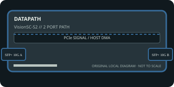

[ INDIVIDUAL COMPONENT // EXPANSION CARDS ]
Datapath VisionSC-S2
Dual-channel PCIe capture card for SDVoE network-distributed video sources. This static reference distinguishes documented card I/O from host software, codecs, and external signal paths.

IDENTIFICATION: Match the exact SKU, model marking, part number, board revision, bracket and connector layout to manufacturer documentation. Similar family names do not imply interchangeable ports, firmware or support.
Capture, playback and compatibility specifications
| Exact model / SKU | VisionSC-S2 — verify the marking and revision on the physical card. |
|---|---|
| PCI/PCIe bus and lanes | PCI Express x8 add-in card; preserve eight lanes for full-rate dual-channel use and validate host generation/slot wiring against the exact card revision. |
| Digital video inputs | Dual SDVoE capture channels arrive over the card’s SFP+ 10GbE network interfaces; source traffic is digital AV-over-IP, not direct HDMI/SDI cabling. Optical modules/fiber or compatible Ethernet infrastructure are system-dependent. |
| Analog ports | No analog video I/O. No local HDMI, SDI, composite or component picture connectors; input is network-delivered SDVoE. |
| Input formats | The manufacturer describes uncompressed HD and 4K video, including HDMI transport up to 4K60 through SDVoE. Pixel formats and frame rates depend on source encoding/transport, network and capture software. |
| Output formats and connectors | No direct video output connector. The card captures network streams into host frame buffers; separate Datapath graphics/network hardware is required for display or onward distribution. |
| Encoding and driver model | SDVoE is an uncompressed AV-over-IP transport in supported modes; the card provides capture/scaling functions rather than an independent media-file encoder. Host software handles recording/encoding. |
| Operating-system compatibility | Datapath Vision driver and SDK/software stack are required. Windows/Linux availability and supported OS versions vary by driver generation; verify release notes before deployment, particularly with newer operating systems. |
| Software | Datapath Vision software/driver, SDK and compatible SDVoE network/control environment. EDID management, scaling and multi-client operation require supported software and network endpoints. |
| Power and cooling | Datapath specifies up to 24 W (12 V and 3.3 V rails in the published S2 data); reserve an x8 slot power budget and airflow for its active cooler. |
| Firmware caveat | Keep card firmware, Vision driver and SDVoE endpoint firmware/configuration compatible. Use Datapath’s official downloads and avoid updating across an unsupported network or interrupting firmware writes. |
Integration notes and limitations
- Network capacity, multicast/control configuration, SFP+ module compatibility and endpoint timing are part of the capture path. Dual-channel 4K operation requires suitable end-to-end Ethernet/fiber bandwidth.
- Verify physical slot fit, PCIe lane wiring, BIOS/UEFI enumeration, host bandwidth and driver support together; a longer slot does not guarantee the electrical width the card needs.
- Record the board revision, firmware/driver versions, OS build, application, signal standard, source timing and tested pixel format as part of commissioning.
- Distinguish a video transport/pixel format from a compressed file codec. Unless the manufacturer explicitly states hardware encoding, codec creation and recording are host-application tasks.
Manufacturer sources and support
- Datapath — VisionSC-S2 product overviewManufacturer source; consult the exact model/revision and software-release notes before installation.
- Datapath Documents — official video-capture datasheet and download libraryManufacturer source; consult the exact model/revision and software-release notes before installation.
Product revisions, driver support and application integrations change over time; manufacturer documentation for the exact card takes precedence over generic family-level guidance.